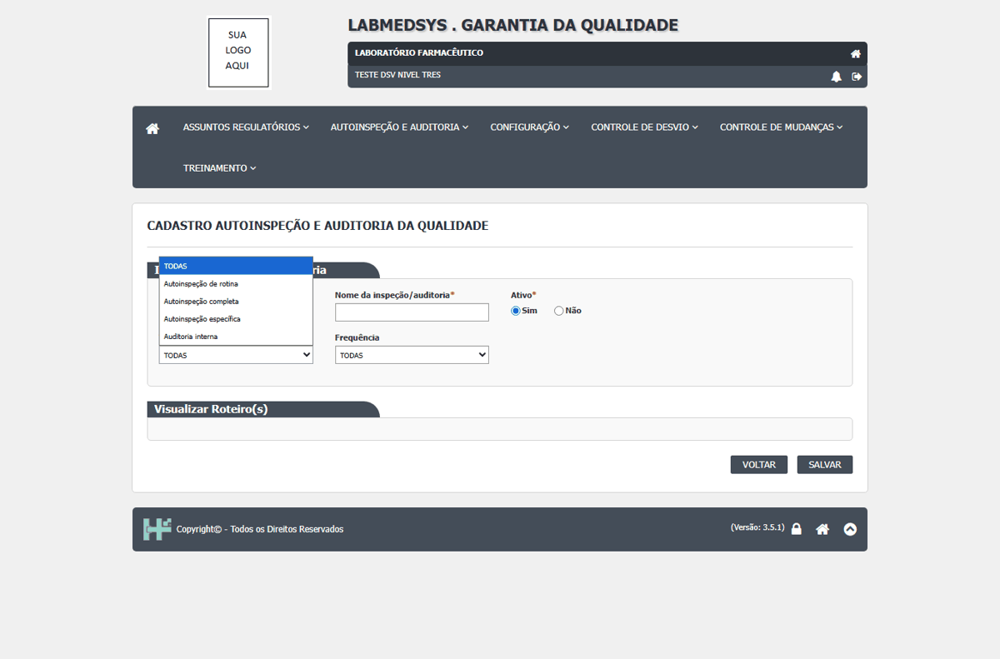

DV-GQ-014 · Roteiro não vinculava à autoinspeção (descartado: faltava salvar o cadastro antes)
Suspeita da rodada de 15/10: não era possível vincular um roteiro de perguntas a uma autoinspeção (a busca de roteiros devolvia vazio). DESCARTADO em 16/10/2026: o vínculo funciona quando se salva primeiro o cadastro, busca o roteiro pelo título na aba Roteiro e confirma pelo botão INCLUIR do modal.
Como reproduzir o erro, passo a passo
- Salvar o Cadastro Autoinspeção e Auditoria.
- Na aba Roteiro, buscar o roteiro pelo título e confirmar com INCLUIR.
Esperado
Roteiro vinculado à autoinspeção.
Obtido
Em 16/10, o roteiro de teste ficou vinculado sem problema.
Sem captura de tela registrada para este defeito.
DV-GQ-093 · Autoinspeção com aspas no nome não pode ser escolhida na Programação
Autoinspeção com aspas no nome não pode ser escolhida na Programação (o clique na linha quebra).
Como reproduzir o erro, passo a passo
- Programação, buscar a R1-5.
Esperado
Selecionar.
Obtido
Autoinspeção com aspas no nome não pode ser escolhida na Programação (o clique na linha quebra).
Sem captura de tela registrada para este defeito.
DV-GQ-110 · O Cadastro Autoinspeção e Auditoria aceita dois cadastros com o mesmo nome
Aceita dois cadastros com o mesmo nome.
Como reproduzir o erro, passo a passo
- Incluir o mesmo nome duas vezes.
Esperado
Recusar.
Obtido
Aceita dois cadastros com o mesmo nome.
Sem captura de tela registrada para este defeito.
DV-GQ-111 · Não existe tipo de auditoria de fornecedor
Não existe tipo de auditoria de fornecedor (a RDC 658 e o Guia 33 esperam auditoria de fornecedores).
Como reproduzir o erro, passo a passo
- Abrir a lista de tipos.
Esperado
Tipo de fornecedor.
Obtido
Não existe tipo de auditoria de fornecedor (a RDC 658 e o Guia 33 esperam auditoria de fornecedores).
Evidência (captura da tela)

DV-GQ-094 · O código da autoinspeção na lista é diferente do mostrado na edição
O código da lista (AI9114) difere do que a edição mostra (AI0017).
Como reproduzir o erro, passo a passo
- Comparar.
Esperado
Mesmo código.
Obtido
O código da lista (AI9114) difere do que a edição mostra (AI0017).
Sem captura de tela registrada para este defeito.